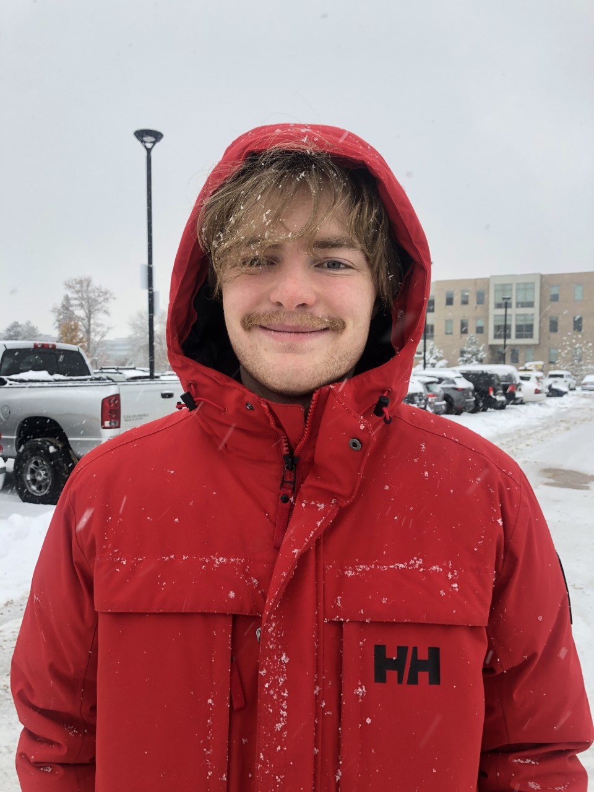
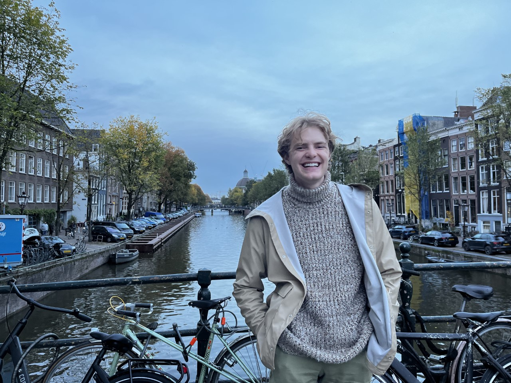

Nichols Crawford Taylor
Email: a.nichols.taylor@gmail.com
I'm currently an undergrad at the University of Utah studying Computer Engineering, Applied Math, and Computer Science. My main research intrests are in robotics, specifically robotic manipulation! I'm planning to persue a Ph.D. once I graduate in 2024. I'm a member of the LL4MA Lab, under Tucker Hermans, where I'm researching planning for robotic manipulation. I also contribute to projects in the Drew Research Lab for Autonomous Robotic Millisystems, under Daniel Drew. I enjoy skiing, rock climbing, and making things. Some things I make I'll document here.
 
Toward a Millimeter-Scale Tendon-Driven Continuum Wrist with Integrated Gripper for Microsurgical Applications
Alexandra Leavitt, Ryan Lam, Nichols Crawford Taylor, Daniel S. Drew, Alan Kuntz
arXiv
In high school I wrote a generative network to create houses in Minecraft. I also built a 6dof robotic arm in my first couple years of college.